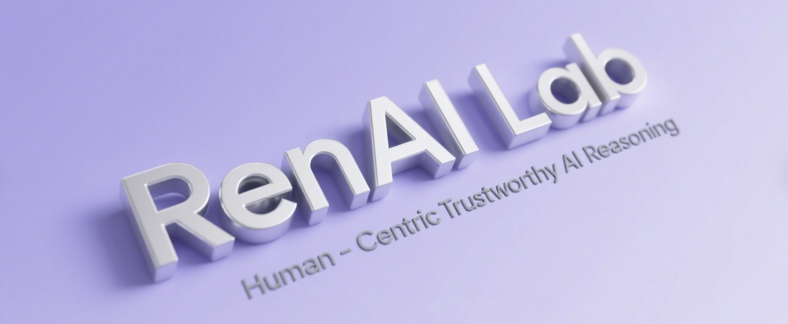

Hi There, Welcome to Ren.AI Lab!
The Ren.AI Lab at HKUST, lead by Dr. Yi R. (May) Fung, spearheads cutting-edge research in advancing human-centric trustworthy AI. Our expertise and interests span from foundational principles for scalable human-model alignment and knowledge-aware robust reasoning, to novel paradigms in adapting language technologies for open-world ecosystems spanning diverse domains — including coding, health, business, and science. We are a young, energetic, and growing team, and we warmly welcome partnerships and joint initiatives.News
- 🎉 [May 2025] TBA.
- 🎉 [April 2025] We presented our paper "CALM: Unleashing the Cross-Lingual Self-Aligning Ability of Language Model QA" at NAACL.
🎓 We're actively recruiting PhD/MPhil/PostDoc (fully-funded) and Undergrad RAs (self-funded) - fill out interest form here if interested.
🎉 Excited to announce the launch of Ren.AI Lab, for advancing human-centric trustworthy AI/NLP reasoning. Here's a comprehensive slide deck of who we are and what we do - collaborations welcomed!
📝 Also serving as Area Chair for NeurIPS this year as well.
Last update: 02/2025